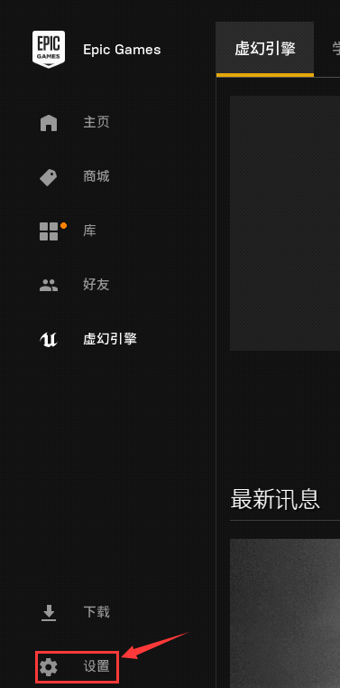
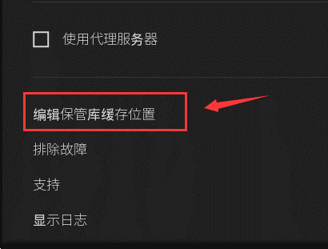
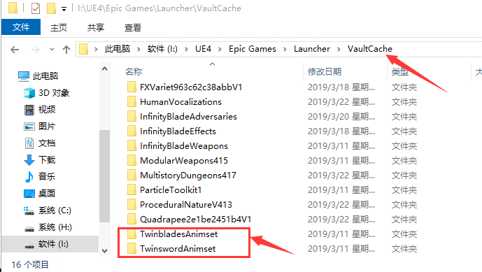
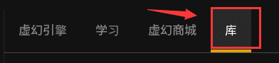
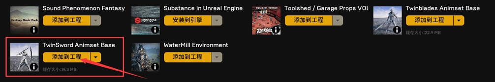
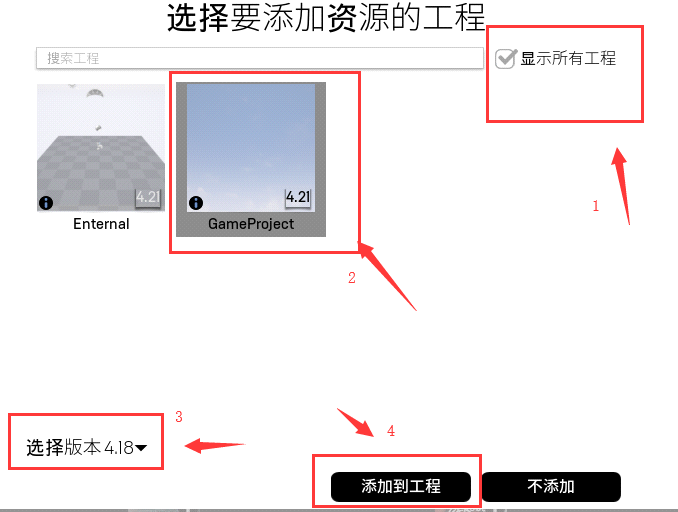
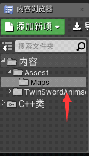
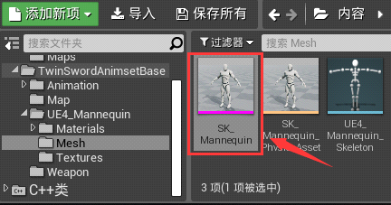
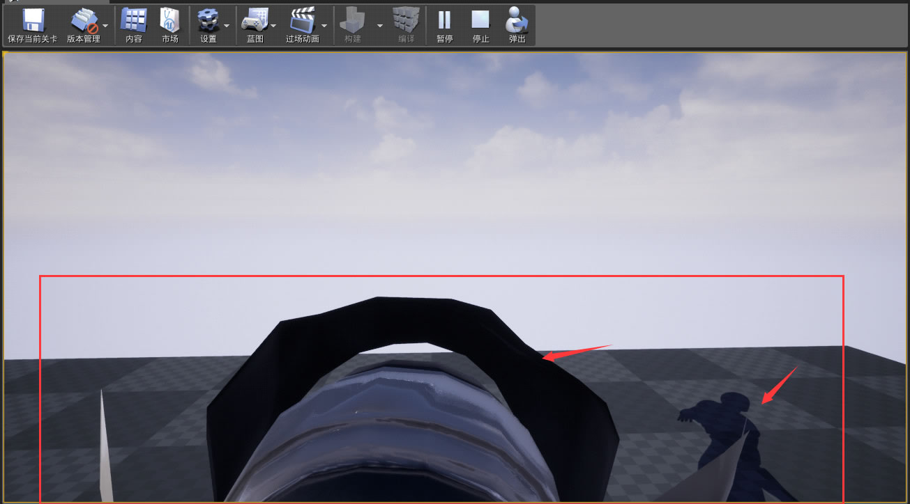

UE4添加人物模型
在正式使用 UE4 添加人物模型之前，我们先来解释几个概念。
1) 首先打开 VS 编辑器，在 APlayingCharacter.h 文件尾部下入以下代码：
2) 首先我们把构造函数里面的
然后我们输入以下代码：
注意：CreateDefaultSubobject 只能用在构造函数里面，在构造函数其他地方使用的话会崩溃。
3) 下载资源，资源地址：https://pan.baidu.com/s/1ymF9V1yEPEb_Kow4Qx-jcA
我先下载这两个资源，这两个资源是人物的模型资源，下载好了之后我们把这两个文件夹复制到你的 UE4 保管库目录，保管库目录可以在 UE4 的启动器里面查看。
然后点击“编辑保管库缓存位置”， 会出现一个路径：
把这两个文件放在 Launcher/VaultCache/ 目录下：
放好了之后，我们回到 UE4 启动器，点击库：
我们会发现我们刚刚复制的两个文件夹出现在了我们保管库里面。我们这里使用 TwinSwordAnimsetBase 资源，点击添加到工程。
首先，由于这两个资源比较旧，所以会显示没有匹配的工程。我们先点击所有工程，然后点击我们的项目，选择最近的版本，然后点击添加到工程。
回到 UE4 编辑器，我们会发现我们的资源窗口已经有了我们刚刚添加的文件夹：
4.双击打开这个文件，依次进入 UE4_Mannequin 文件夹和 Mesh 文件夹，我们会看到有三个资源，其中 SK_Mannequin 就是我们的骨骼模型资源，我们单击选中这个资源然后 按Ctrl+C 获取这个资源的路径。
5) 回到VS编辑器，我们在 APlayingCharacter 文件的构造函数写入以下代码：
6) 我们使用 GetMesh() 来设置模型，在构造函数中继续下入以下代码：
7) 编译之后，回到编辑器点击 play，发现我们的人物已经添加到屏幕上。
下一节我们将会添加一个摄像机，实现第三人称视角。
什么是组件
在添加人物模型之前先介绍一个概念叫“组件”，组件是什么呢？组件的作用是为了让 Actor 实现一个功能，比如说：我们现在的角色，没有模型，我们需要一个模型那怎么办呢？那么我就要在 Character 身上挂一个“骨骼模型组件”，比如说我想要我的摄像机远离我的人物实现一个上帝视角那要怎么做呢？那么我们可以在Character的身上挂一个摄像机组件。什么是 Actor
Actor 是 UE4 里面的 “可放置物品”，我们在 UE4 游戏窗口中所看到的场景、灯光、角色、模型，它们的父类都是 Actor。什么是Character
Character 是 Actor 的一个子类，Character 封装了 移动组件 ，让 Character 类有了移动的功能。添加人物模型
通过上面的介绍，我们已经知道需要通过添加组件来添加人物模型。那么我们要如何在 C++ 里面添加组件呢？1) 首先打开 VS 编辑器，在 APlayingCharacter.h 文件尾部下入以下代码：
//这个是骨骼模型组件 USkeletalMeshComponent* MeshComponent = nullptr; //这个是骨骼模型 USkeletalMesh* SkeletalMesh = nullptr;上面就是声明组件的格式。USkeletalMeshComponent 是组件的类型，贴心的 UE4 其实已经在父类帮我们创建好了 USkeletalMeshComponent，我这里只是演示如何添加一个组件。删掉
USkeletalMeshComponent* MeshComponent = nullptr，我们来到构造函数去注册我们的骨骼模型 USkeletalMesh。2) 首先我们把构造函数里面的
PrimaryActorTick.bCanEverTick = true;删掉，然后把virtual void Tick(float DeltaTime) override函数删掉，这个是开启帧事件和实现帧事件的函数，这个帧事件非常损耗性能，因为它是每帧执行一次的，我们不需要。然后我们输入以下代码：
APlayingCharacter::APlayingCharacter()
{
//注册组件
SkeletalMesh = CreateDefaultSubobject<USkeletalMesh>(TEXT("SkeletalMesh"));
}
这里我注册了一个骨骼模型。注意，SkeletalMesh 是骨骼模型，不是骨骼模型组件，但是它还是一个组件，我们需要把这个骨骼模型添加到骨骼模型组件里面去，它们是配套的。注意：CreateDefaultSubobject 只能用在构造函数里面，在构造函数其他地方使用的话会崩溃。
3) 下载资源，资源地址：https://pan.baidu.com/s/1ymF9V1yEPEb_Kow4Qx-jcA
我先下载这两个资源，这两个资源是人物的模型资源，下载好了之后我们把这两个文件夹复制到你的 UE4 保管库目录，保管库目录可以在 UE4 的启动器里面查看。

然后点击“编辑保管库缓存位置”， 会出现一个路径：

把这两个文件放在 Launcher/VaultCache/ 目录下：

放好了之后，我们回到 UE4 启动器，点击库：

我们会发现我们刚刚复制的两个文件夹出现在了我们保管库里面。我们这里使用 TwinSwordAnimsetBase 资源，点击添加到工程。

首先，由于这两个资源比较旧，所以会显示没有匹配的工程。我们先点击所有工程，然后点击我们的项目，选择最近的版本，然后点击添加到工程。

回到 UE4 编辑器，我们会发现我们的资源窗口已经有了我们刚刚添加的文件夹：

4.双击打开这个文件，依次进入 UE4_Mannequin 文件夹和 Mesh 文件夹，我们会看到有三个资源，其中 SK_Mannequin 就是我们的骨骼模型资源，我们单击选中这个资源然后 按Ctrl+C 获取这个资源的路径。

5) 回到VS编辑器，我们在 APlayingCharacter 文件的构造函数写入以下代码：
//加载模型
SkeletalMesh = LoadObject<USkeletalMesh>(NULL,TEXT("SkeletalMesh'/Game/TwinSwordAnimsetBase/UE4_Mannequin/Mesh/SK_Mannequin.SK_Mannequin'"));
LoadObject 用来动态加载对象资源，它可以用在任何地方。这里我们第二个参数传入的是一个路径，这个路径是我们模型的路径，我们直接Ctrl+V就可以获取这个资源的路径。6) 我们使用 GetMesh() 来设置模型，在构造函数中继续下入以下代码：
//把我们的模型赋值到模型组件 GetMesh()->SetSkeletalMesh(SkeletalMesh);GetMehsh() 其实就是 SkeletalMeshComponente 骨骼模型组件，然后通过 SetSkeletalMesh() 函数去添加我们刚刚加载的模型。
7) 编译之后，回到编辑器点击 play，发现我们的人物已经添加到屏幕上。

下一节我们将会添加一个摄像机，实现第三人称视角。
关注公众号「站长严长生」，在手机上阅读所有教程，随时随地都能学习。内含一款搜索神器，免费下载全网书籍和视频。

微信扫码关注公众号